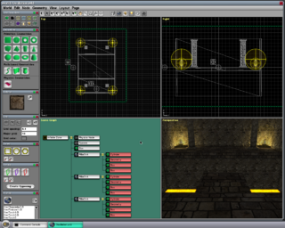
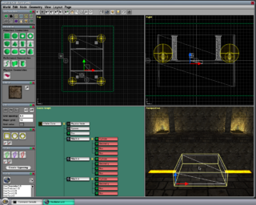
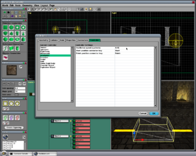
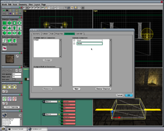
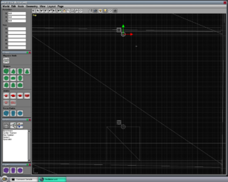
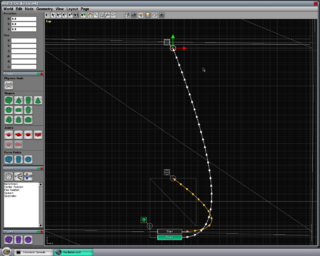

Oscillation Tutorial
From C4 Engine Wiki
This tutorial teaches you how to assign an Oscillation Controller to a node in a level. The Oscillation Controller is a specific type of controller that's built into the C4 Engine, and it causes a node to oscillate back and forth between two points with a velocity based on a sine wave.
To follow this tutorial, you need the Data/Tutorial/world/Oscillation.wld file that is included in the C4-xxx-Data.zip distribution.
To enlarge any of the screenshots below, click on the thumbnail icon below the image. If you're using a Mac, all shortcuts that begin with the control key should be changed to the command key.
Contents |
Step 1: Open Oscillation.wld
Open Data/Tutorial/world/Oscillation.wld in the World Editor by typing Ctrl-O or by entering world world/Oscillation into the Command Console. The World Editor will display the scene shown in Figure 1 containing a room with two platforms separated by a lava pit.

Step 2: Assign Oscillation Controller
There is a smaller platform near the center of the scene that sticks out above the lava. We are going to assign an Oscillation Controller to this geometry so that it moves back and forth above the lava pit and allows the player to safely cross to the other side. Click on this platform to select it, as shown in Figure 2.

Once the geometry is selected, type Ctrl-I to open the Node Info window, and then click on the Controller tab. Select the Oscillation Controller from the list.
There are three settings for the Oscillation Controller, a speed and two connectors. The Oscillation speed setting determines how fast the node oscillates back and forth, and it's measured in cycles per second. A value of 0.5 would mean that the node moves halfway through one complete cycle in one second, which corresponds to a period of two seconds for each complete cycle. This is pretty fast, so we'll enter a much smaller number like 0.05, which means it takes 20 seconds for the node to complete one full cycle and return to its starting position.
The connector settings specify the names of the connectors that will be used to specify the starting and finishing positions for the oscillation, as described in the next step. We'll use the default values, so no changes need to be made to these settings.
The controller settings should look like those shown in Figure 3. Leave the Node Info window open because we are going to add connectors in the next step.

Step 3: Create Start and Finish Connectors
Click on the Connectors tab in the Node Info window. We need to add two new connectors to the oscillating node that will be connected to markers in the world that tell the controller how far to move the node. Click the New button at the bottom of the window twice. In the blank fields that appear under the Custom Connectors heading, enter "Start" and "Finish" (without quotes). Connector names are case-sensitive, so be sure to capitalize the first letter. One this has been done, the Node Info window should appear as shown in Figure 4. Click OK to save the node settings and return to the main editor.

Step 4: Add Markers to the World and Connect
We now need to add two locator markers to the world that tell the Oscillation Controller how far to move its target node. The Markers Page is already open, but you'll have to scroll down with the mouse wheel to see it on the left side of the editor window. Select the Locator Marker tool in the upper-left corner of the Markers Page.
Type Ctrl-1 to make the Top viewport fill the editor window, and zoom in a little with the mouse wheel. Click on the upper edge of the geometry that has the Oscillation Controller assigned to it (which should still be selected before clicking). This will place a new locator marker in the world. Click again on the lower edge of the platform on the opposite side of the lava pit. This will place a second locator marker in the world. After both markers have been created, the editor window should look like that shown in Figure 5.

The difference in the position of the two locator markers corresponds to the distance over which the node will move.
The final task is to connect the geometry node to the two locator markers. Select the Connect tool at the top of the editor window (or use the 5 key as a shortcut), and select the geometry node by clicking on it in the Top viewport. (The ceiling has been hidden in this world so that a click will go through to the platform geometry in the Top viewport.)
You will now see the two connectors named Start and Finish attached to the geometry node. Click on the Start connector, then click on the first locator marker that was placed in the world, and type Ctrl-L to link them together. Repeat this process by clicking on the Finish connector, clicking on the second locator marker, and typing Ctrl-L to link those together. Once this is done, the editor window should appear as shown in Figure 6.

Step 5: Play the Level
You can now type Ctrl-P to save and play the level. You will see the platform moving back and forth above the lava pit, completing a full cycle every 20 seconds. If you're running the demo game or SimpleChar, then you can walk the player onto the moving platform when it's close enough to your side of the lava pit. (In the demo game, you can also jump.) The platform will carry the player to the other side where he can safely step off.